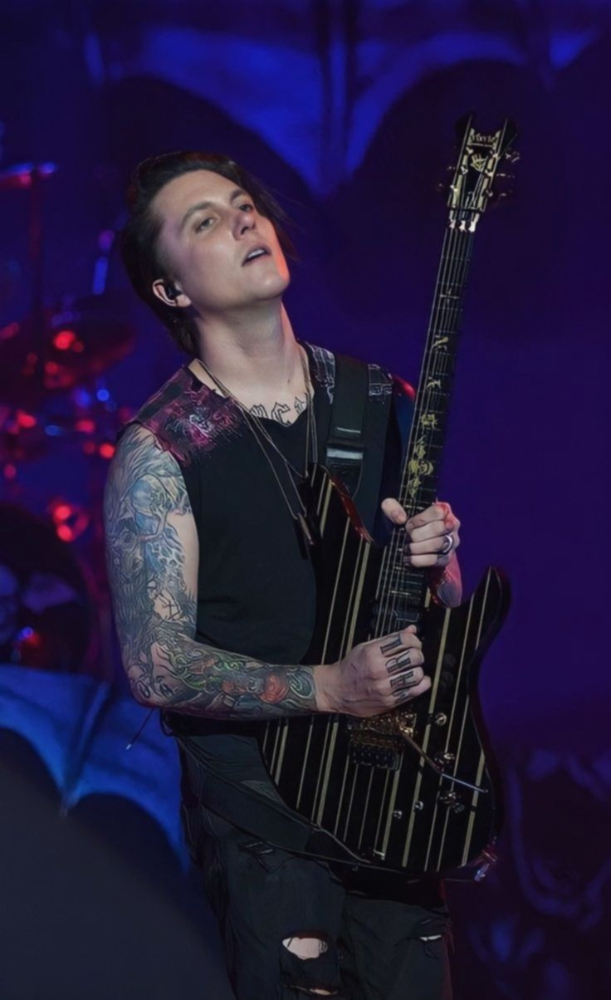
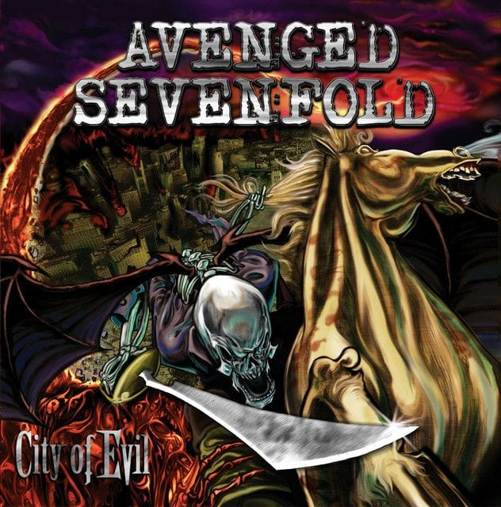
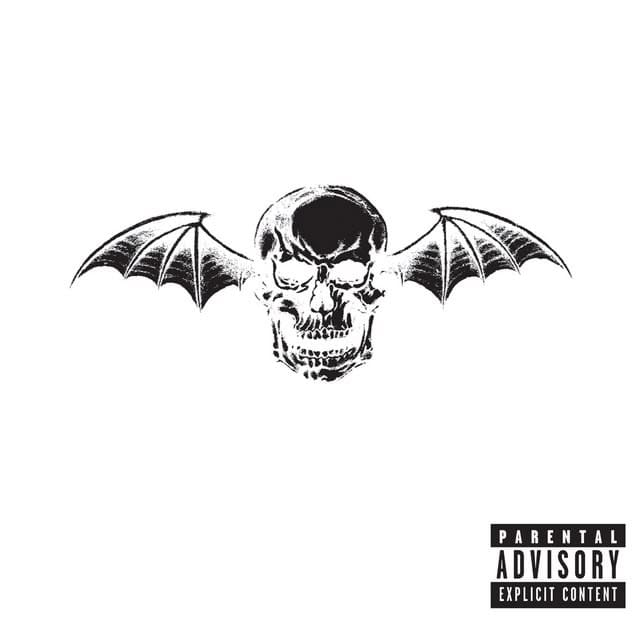

Live Performance
Synyster Gates
Potret sang gitaris dengan instrumen signature-nya.
Kumpulan aset visual dan momen karya Synyster Gates.

Potret sang gitaris dengan instrumen signature-nya.

Salah satu karya dengan solo gitar paling emosional.

Eksperimen teatrikal A7X dengan aransemen yang unik.